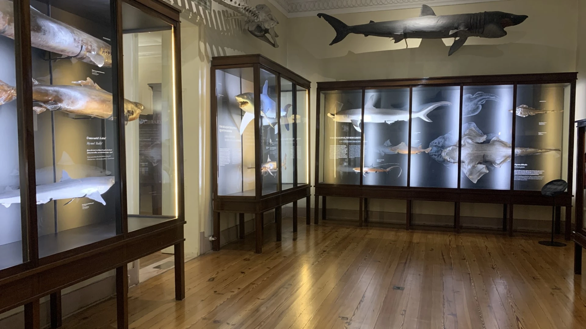
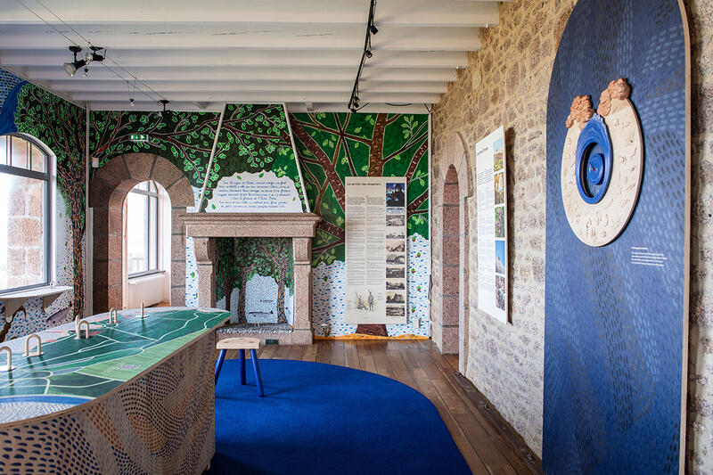
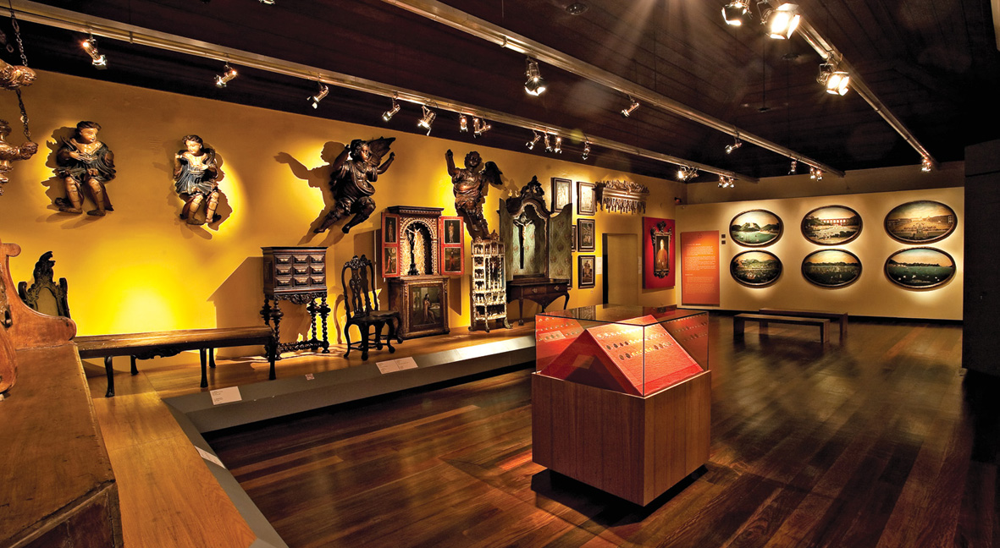

Oceano
Explore a seção Oceano do Quasar Museu, um ambiente dedicado à beleza e à diversidade
da vida aquática.
Descubra diferentes espécies, conheça curiosidades sobre os ecossistemas marinhos e mergulhe em uma
experiência fascinante pelo mundo subaquático.

Floresta
Explore a seção Floresta do Quasar Museu, um ambiente dedicado à riqueza da natureza e à diversidade da
vida terrestre.
Descubra espécies fascinantes, conheça a importância dos ecossistemas florestais e mergulhe nos
mistérios de um dos ambientes mais essenciais do nosso planeta.

História
Explore a seção História do Quasar Museu, uma jornada pelo passado que revela os acontecimentos, as
culturas
e as civilizações que moldaram o mundo.
Descubra curiosidades, conheça diferentes épocas e compreenda como o passado influencia a sociedade em
que
vivemos hoje.

Vamos conferir um pouco do Museu?
Aqui, você encontrará um pouco do nosso museu.
Se encantou? Vamos agendar!
Clique aqui para voltar ao início e agendar sua visita.